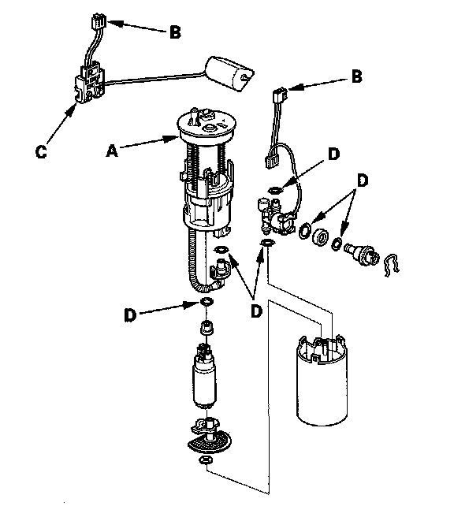

Fuel Filter: Service and Repair
Fuel Filter ReplacementThe fuel filter should be replaced whenever the fuel pressure drops below the specified value, after making sure that the fuel pump and the fuel pressure regulator are OK.
1. Remove the fuel tank unit.

2. Remove the fuel filter set (A).
3. Check these items before installing the fuel tank unit:
- When connecting the wire harness, make sure the connection is secure and the connectors (B) are firmly locked into place.
- When installing the fuel gauge sending unit (C), make sure the connection is secure and the connector is firmly locked into place. Be careful not to bend or twist it excessively.
4. Install the fuel filter set in the reverse order of removal with new O-rings (D). When installing the fuel tank unit, align the marks on the unit and the fuel tank.
NOTE: Coat the O-rings with clean engine oil.